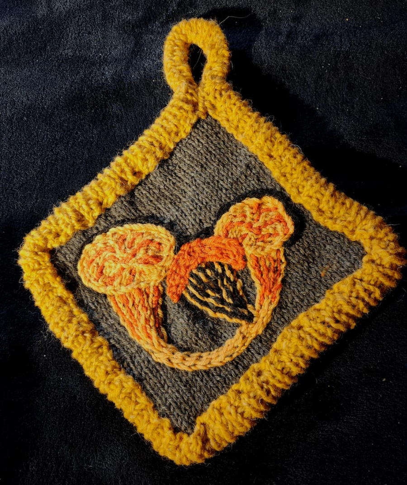

Wildlife-Inspired Functional Art
Each piece is handcrafted using natural fibers, celebrating Alaska's incredible wildlife and landscapes. From the marine wonders of Glacier Bay National Park to the fungi of Southeast Alaska forests, these creations bring a piece of the Last Frontier into your home.
All materials are natural fibers - wool, cotton, and silk - often sourced locally or chosen for their sustainability and quality.

🏆 Award-Winning Designs
Best in Show - Textiles
Southeast Alaska State Fair - Halibut Hot Pad Collection
Celebrating Alaskan craftsmanship and mathematical design in fiber art. These awards recognize the creativity and skill behind each handcrafted piece.
Alaskan Wildlife Potholders
Functional kitchen art featuring creatures from our local ecosystems

Winter Chanterelle
Edible mushroom potholder inspired by the Winter Chanterelles that grow throughout Glacier Bay National Park. These golden mushrooms are a favorite forager's find in Southeast Alaska.
Hand-knit with intricate embroidery, capturing the distinctive funnel shape and gills of this prized edible fungus.

Giant Pacific Octopus
Knit and embroidered octopus potholder featuring Alaska's largest octopus species. The Giant Pacific Octopus is an intelligent, captivating creature of our coastal waters.
Intricate tentacle detailing with suction cup embroidery, created with mathematically precise patterning.

Humpback Whale
Humpback whale potholder inspired by the majestic whales that feed in Glacier Bay's summer waters. These whales migrate thousands of miles to feast in Alaska's rich seas.
Features the distinctive pectoral fins and knobby head of the humpback, with embroidery highlighting baleen plates.

Halibut Hot Pad Collection
Three halibut hot pads in varying natural colors. Pacific halibut are a prized Alaska fishery, and these functional pieces celebrate their unique flat shape.
Award-winning design. Each halibut shows both eyes on one side, accurate to the real fish's adaptation.
🏆 Southeast Alaska State Fair - Best in Show Textiles

School of Flat Fish
A school of flat fish potholders displayed in the snow, showing their beautiful natural colors against a winter background.
Each fish in this school shows the unique flat fish adaptation where both eyes migrate to one side of the head.

Ursa's Constellations
A basket of hand-knit teddy bears nestled in the snow, each with its own personality and charm. These heirloom-quality toys are perfect for children and collectors alike.
Made with soft, durable natural fibers and embroidered details. Each bear is unique, with different colors and expressions.
Perfect for: Gifts, heirlooms, or comforting companions
The Making Process
Each piece begins with mathematical patterning, followed by careful hand-knitting and finishing with detailed embroidery.

Action shot showing the knitting process for a glove. Each stitch is placed intentionally, and beads are added individually during the knitting process for precise placement and durability.
Wearable Alaskan Art
Functional pieces for staying warm in style

Aurora Lace Scarf
Inspired by the dancing colors of the Aurora Borealis, this lace scarf features flowing, wavelike patterns that mimic the northern lights.
Made with fine merino wool for warmth without weight. The intricate lace pattern creates a delicate, ethereal look perfect for dressy occasions or everyday elegance.
Features: Lightweight, breathable, elegant lace design, northern lights color palette

Beaded Fingerless Gloves
Merino wool with glass seed beads, photographed in the snow to show their winter warmth and beauty. Perfect for chilly Alaska days while maintaining dexterity.
Each bead is placed individually during the knitting process. Made with luxurious merino wool for warmth without bulk, with glass seed beads adding sparkle.
Ideal for: Artists, knitters, or anyone who needs hand warmth while working in cool temperatures
📍 Available at Local Markets
Find these pieces at markets in Gustavus (summer) and Fairbanks (winter). Also available for custom commissions - wildlife, mathematical designs, and wearables.
Based in Fairbanks (winter) and Gustavus (summer)